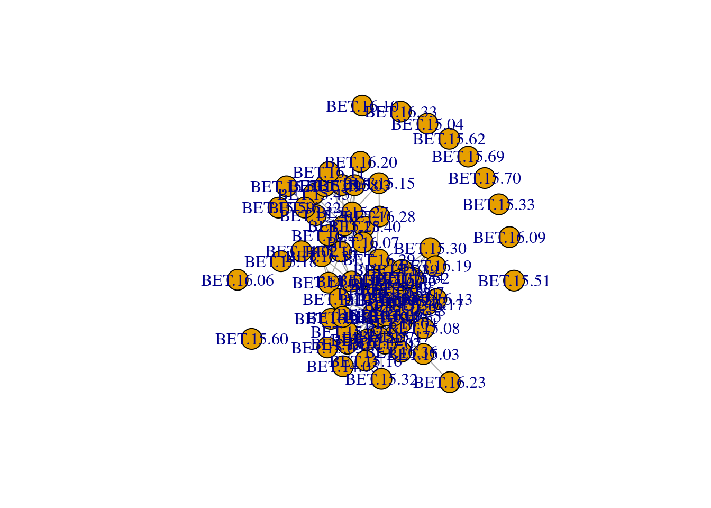
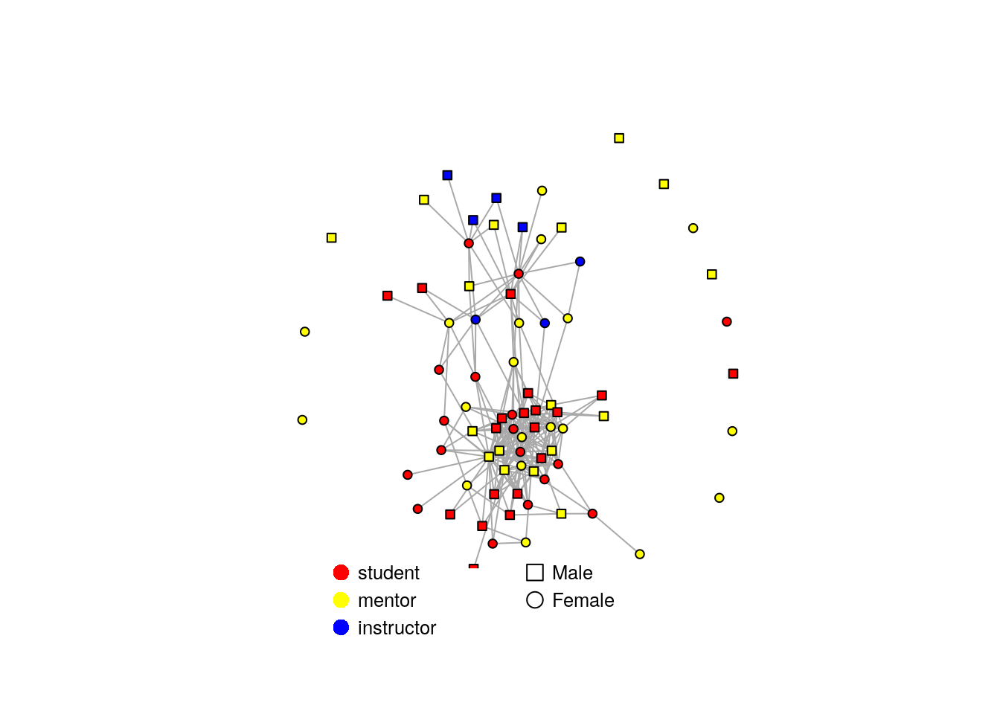
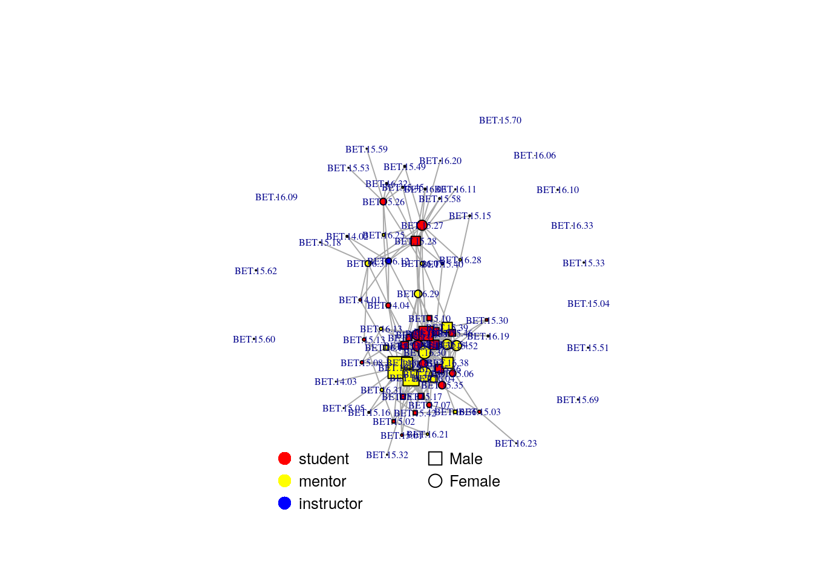
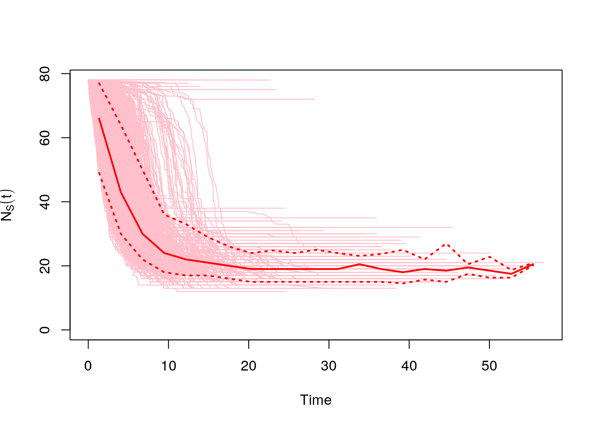
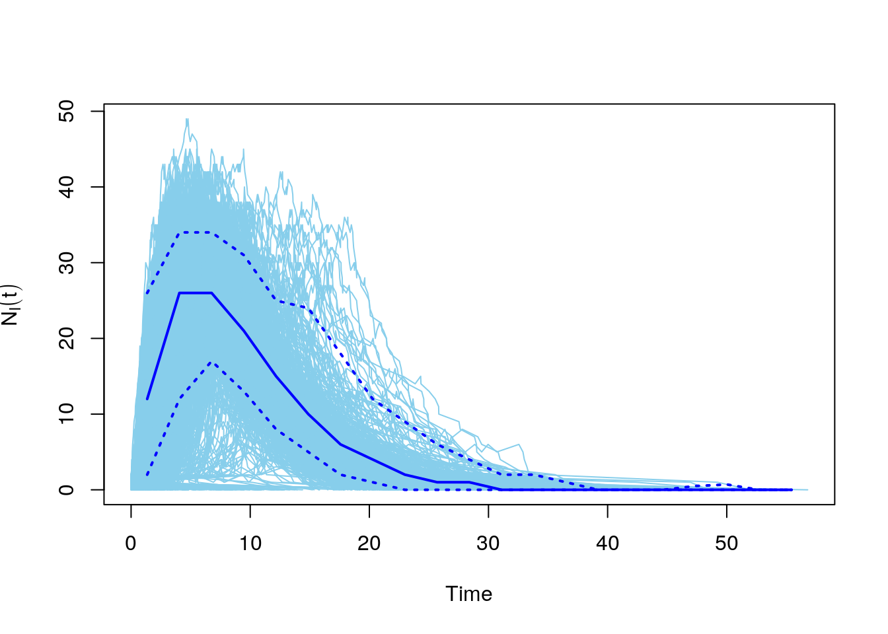
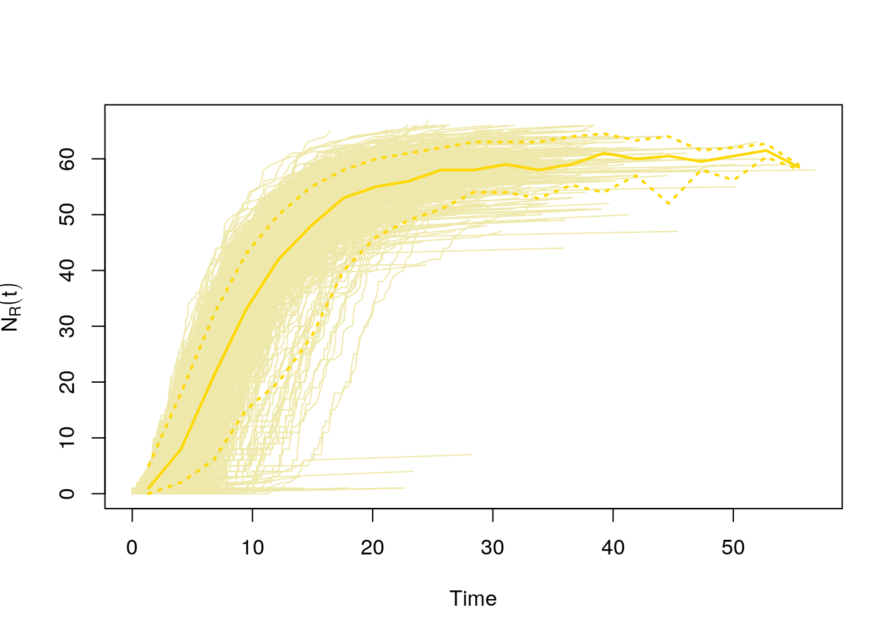

#this is an example code script
plot(1:10,1:10)
title("Example plot in a code chunk")
This is a Quarto document. It allows us to combine background text, code, and its output in one document. It can be “rendered” into an HTML file that can be read in any browser. All code chunks look like the following below, and can be run in RStudio just like a line in a standard .R script:
#this is an example code script
plot(1:10,1:10)
title("Example plot in a code chunk")
A “code-only” version of this tutorial is available in the network-tutorial.R script.
This is a tutorial that was developed as part of the E2M2 workshop held in December 2022. It is based on code developed by Fidisoa Rasambainarivo, further developed by Michelle Evans. If you have any questions, please send an email to Michelle at mv.evans.phd@gmail.com.
The tutorial follows an example scenario when network analysis may be needed by public health authorities. In this example, an outbreak of an unknown parasite community has occured near the great Republic of E2M2. Public health officials want to evaluate the risks of disease spreading in a small community. They have collected interaction data from a group of 79 scientists from 3 institutions. This dataset records whether each person spent time with another person during the past 3 days.
Here are the packages we’ll need for this tutorial. I also choose to set some base configurations that I like, such as never reading in strings as factors and setting a limit for the number of digits to include when printing to the console.
options(stringsAsFactors = F, scipen = 999, digits = 4)
#networks
library(igraph)
library(asnipe)
#data manipulation
library(tidyr)
library(dplyr)First, we will explore the dataset to get a feel for its structure and format.
edgelist <- read.csv("edgelist-e2m2.csv")
head(edgelist) Node1 Node2 Link
1 BET.14.01 BET.14.01 0
2 BET.14.01 BET.14.02 0
3 BET.14.01 BET.14.03 0
4 BET.14.01 BET.14.04 0
5 BET.14.01 BET.15.01 0
6 BET.14.01 BET.15.02 0str(edgelist)'data.frame': 6241 obs. of 3 variables:
$ Node1: chr "BET.14.01" "BET.14.01" "BET.14.01" "BET.14.01" ...
$ Node2: chr "BET.14.01" "BET.14.02" "BET.14.03" "BET.14.04" ...
$ Link : int 0 0 0 0 0 0 0 0 0 0 ...In its current structure, each potential pair is represented by row in the dataframe. Whether or not that pair of nodes is connected is described by the column Link, with a 0 corresponding to no social contact over the prior 3 days and a 1 indicating contact.
We want to “widen” this dataset so that it becomes a matrix where each row or column represents an individual node and the value of the cell for column i and row j is the value of the edge between individual i and j.
network <- pivot_wider(edgelist, names_from = Node2, values_from = Link)
#move name of node1 to the rowname and turn into a matrix
network.mat <- select(network, -Node1) %>%
as.matrix()
rownames(network.mat) <- network$Node1
#set diagonal (contact with oneself) to 0
diag(network.mat) <- 0
#investigate small portion of this matrix to see what it looks like
network.mat[1:6,1:6] BET.14.01 BET.14.02 BET.14.03 BET.14.04 BET.15.01 BET.15.02
BET.14.01 0 0 0 0 0 0
BET.14.02 0 0 0 0 0 0
BET.14.03 0 0 0 0 0 0
BET.14.04 0 0 0 0 0 0
BET.15.01 0 0 0 0 0 0
BET.15.02 0 0 0 0 0 0The public health officials also have information, or metadata, about each citizen (node). This includes their sex, institution, and what their superpower is.
nodeinfo <- read.csv("nodeinfo_all.csv",header = T)
str(nodeinfo)'data.frame': 79 obs. of 4 variables:
$ CitizenID : chr "BET.14.01" "BET.14.02" "BET.14.03" "BET.14.04" ...
$ Institution: chr "student" "student" "student" "student" ...
$ Sex : chr "F" "M" "F" "F" ...
$ superpower : chr "Mogul" "Mogul" "Mogul" "Wizard" ...head(nodeinfo) CitizenID Institution Sex superpower
1 BET.14.01 student F Mogul
2 BET.14.02 student M Mogul
3 BET.14.03 student F Mogul
4 BET.14.04 student F Wizard
5 BET.15.01 student F Mogul
6 BET.15.02 student M MogulIf we want to visualize the network as series of nodes and edges, we need to turn it into a graph object using the igraph package. It can then be plotted automatically via the plot function
net <- graph.adjacency(network.mat, mode = "undirected", diag = FALSE, weighted = TRUE)
plot(net)
We can use the metadata about the nodes to make this graph more informative by assigning it to the nodes/vertices defined as V(net):
#first check that the order of nodes in the nodeinfo matches that in the network
nodeinfo$CitizenID == V(net)$name #all should be TRUE [1] TRUE TRUE TRUE TRUE TRUE TRUE TRUE TRUE TRUE TRUE TRUE TRUE TRUE TRUE TRUE
[16] TRUE TRUE TRUE TRUE TRUE TRUE TRUE TRUE TRUE TRUE TRUE TRUE TRUE TRUE TRUE
[31] TRUE TRUE TRUE TRUE TRUE TRUE TRUE TRUE TRUE TRUE TRUE TRUE TRUE TRUE TRUE
[46] TRUE TRUE TRUE TRUE TRUE TRUE TRUE TRUE TRUE TRUE TRUE TRUE TRUE TRUE TRUE
[61] TRUE TRUE TRUE TRUE TRUE TRUE TRUE TRUE TRUE TRUE TRUE TRUE TRUE TRUE TRUE
[76] TRUE TRUE TRUE TRUE#if it is not true, then you need to reorder the nodeinfo based on order of names in network
nodeinfo <- nodeinfo[match(V(net)$name,nodeinfo$CitizenID),]
# shape is dependent on sex
V(net)$shape <- ifelse(nodeinfo$Sex == "F", "circle", "square")
#color is dependent on institution
#create a named color palette
color.pal <- c("instructor" = "blue", "mentor" = "yellow", "student" = "red")
#assign color by matching institution to this palette
V(net)$color = color.pal[match(nodeinfo$Institution, names(color.pal))]
#plot with legend
fr <- layout_nicely(net, dim=2) #uses a specific algorithm to draw the network
plot(net,
vertex.label=NA,
vertex.size=4,
layout=fr,
edge.lty=1,edge.width=1,
margin=c(-0.1,-0.1,0,0))
legend(x=0, y=-0.9, c("Male","Female"),
pch=c(0,1), pt.cex=1.5, cex=.8, bty="n", ncol=1,y.intersp = 1.2)
legend(x=-0.9, y=-0.9, c("student", "mentor", "instructor"),
pch=16, col=c("red","yellow","blue"), bg=c("red","yellow","blue"), pt.cex=1.5, cex=.8, bty="n", ncol=1, y.intersp= 1.2)
It is also possible to plot social networks using ggplot via the ggraphs package. For more information, refer to the ggplot2 book.
There are many existing functions in the igraph package for calculating characteristics of individual nodes and and at the level of the network
First, we will calculate two characteristics for each node : degree and betweenness. We can add these columns to our dataframe of node metadata and also visualize these characteristics on the network
nodeinfo$deg <- degree(net)
nodeinfo$bet <- betweenness(net, directed=F)
head(nodeinfo) CitizenID Institution Sex superpower deg bet
1 BET.14.01 student F Mogul 3 29.123
2 BET.14.02 student M Mogul 2 1.727
3 BET.14.03 student F Mogul 1 0.000
4 BET.14.04 student F Wizard 6 122.116
5 BET.15.01 student F Mogul 3 10.862
6 BET.15.02 student M Mogul 4 18.817# add the degree as a characteristic of the node to the network
V(net)$size <- nodeinfo$deg/2
plot(net,
vertex.label.cex=0.5,
vertex.label.dist=0,
layout=fr,
edge.lty=1, edge.width=1,
margin=c(-0.1,-0.1,0,0))
legend(x=0, y=-0.9, c("Male","Female"),
pch=c(0,1), pt.cex=1.5, cex=.8, bty="n", ncol=1,y.intersp = 1.2)
legend(x=-0.9, y=-0.9, c("student", "mentor", "instructor"),
pch=16, col=c("red","yellow","blue"), bg=c("red","yellow","blue"), pt.cex=1.5, cex=.8, bty="n", ncol=1, y.intersp= 1.2)
Mean Distance: What is the average number of steps between any two pairs of individuals?
mean_distance(net, directed=FALSE)[1] 2.823Edge Density: What is the proportion of realized links compared to all possible links? (How dense is the network?)
edge_density(net)[1] 0.0727Transitivity: What is the probability that the adjacent vertices of a focal vertex are also connected? (I.e. are my friends also friends with each other?)
transitivity(net) [1] 0.001388The public health officials had the following question:
Are individuals of the same institution or sex more likely to interact with each other than predicted by chance?
We can answer this question via MRQAP from the asnipe package. This tests whether y (interaction between two nodes) is related to x1 (sex similarity) while controlling for x2 (group belonging) and vice versa.
First, we need to create matrices that describe an individual’s membership of our groups (sex and institution):
sex.info <- select(nodeinfo, ID = CitizenID, Group = Sex)
gbs <- get_group_by_individual(sex.info, data_format = "individuals")
net.sx <- get_network(gbs, data_format = "GBI")Let’s compare how the information is reported in each of our datasets to better understand what the above code does:
sex.info[1:6,] ID Group
1 BET.14.01 F
2 BET.14.02 M
3 BET.14.03 F
4 BET.14.04 F
5 BET.15.01 F
6 BET.15.02 Mnet.sx[1:6,1:6] BET.14.01 BET.14.02 BET.14.03 BET.14.04 BET.15.01 BET.15.02
BET.14.01 0 0 1 1 1 0
BET.14.02 0 0 0 0 0 1
BET.14.03 1 0 0 1 1 0
BET.14.04 1 0 1 0 1 0
BET.15.01 1 0 1 1 0 0
BET.15.02 0 1 0 0 0 0It has created a new matrix of connections between individuals in row i and column j, where a value of 1 signifies that individuals i and j are in the same group.
inst.info <- select(nodeinfo, ID = CitizenID, Group = Institution)
gbs <- get_group_by_individual(inst.info, data_format = "individuals")
net.inst <- get_network(gbs, data_format = "GBI")We can then use these matrices as dependent variables in our statistical model to explain the similarity in our contact matrix as a function of shared group membership. We have set the number of randomisations low (99) to speed up the model, but if you were running this analysis for real you would want to use 999.
net.model <- mrqap.dsp(network.mat ~ net.sx + net.inst,
intercept = TRUE,
directed = "undirected",
diagonal = F, test.statistic = "beta",
randomisations = 99)You can call the model object to look at its summary
net.modelMRQAP with Double-Semi-Partialing (DSP)
Formula: network.mat ~ net.sx + net.inst
Coefficients:
Estimate P(β>=r) P(β<=r) P(|β|<=|r|)
intercept 0.021732 1.0000 0.0000 0.0000
net.sx -0.001244 0.3131 0.6869 0.6768
net.inst -0.021127 0.0000 1.0000 0.0000
Residual standard error: 0.1099 on 3078 degrees of freedom
F-statistic: 13.85 on 2 and 3078 degrees of freedom, p-value: 1.028e-06
Multiple R-squared: 0.008919 Adjusted R-squared: 0.008275
AIC: -839.2 It shows the overall estimate of the coefficent (Estimate) as well as a comparison of that estimate to the probability that a similar pattern could be found randomly.
The estimate for the coefficient of the effect of shared sex is very small and doesn’t have a high probability of being less than or greater than random.
The estimate for the coefficient of the effect of a shared institute has a high probability of being less than random, suggesting that being of the same institute means individuals are less likely to interact. However, note that this coefficient is small, and the overall R-squared of the model very low, so it doesn’t seem to have a strong effect.
As a sanity check, we can make a new network where all of the mentors are connected and see how this changes our statistical output.
ind.mentor <- nodeinfo$Institution=="mentor"
net2 <- network.mat
net2[ind.mentor, ind.mentor] <- 1
net.model2 <- mrqap.dsp(net2 ~ net.sx + net.inst,
intercept = TRUE,
directed = "undirected",
diagonal = F, test.statistic = "beta",
randomisations = 99)
net.model2MRQAP with Double-Semi-Partialing (DSP)
Formula: net2 ~ net.sx + net.inst
Coefficients:
Estimate P(β>=r) P(β<=r) P(|β|<=|r|)
intercept 0.0213387 0.7778 0.2222 0.2222
net.sx -0.0004561 0.4545 0.5455 0.9192
net.inst 0.4706864 1.0000 0.0000 0.0000
Residual standard error: 0.3407 on 3078 degrees of freedom
F-statistic: 714.1 on 2 and 3078 degrees of freedom, p-value: 0
Multiple R-squared: 0.3169 Adjusted R-squared: 0.3165
AIC: -839.2 In this new dataset, we can see that being in the same institution greatly increases a dyad’s probality of interacting, given by the much higher coefficient and R-squared.
The igraph package comes with a function that runs simulations of an SIR model on a network graph. You can change the values of beta and gamma to see how that changes the epidemic dynamics on the network.
Calling plot will automatically plot all of the simulations, plus a median line and confidence intervals.
net.sims <- sir(net, beta = 0.2, gamma = 0.2 , no.sim = 1000)
#number of susceptible
plot(net.sims, comp = "NS")
#number of infected
plot(net.sims, comp = "NI")
#number of recovered
plot(net.sims, comp = "NR")